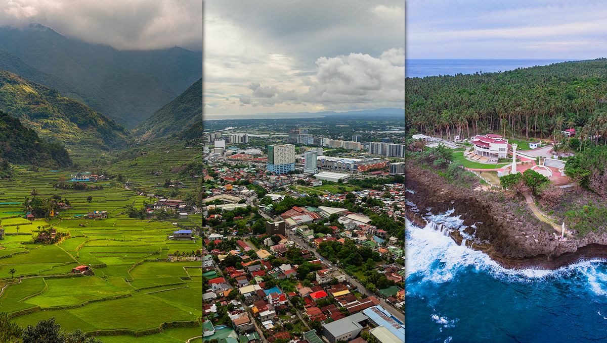

The Philippine pledges reflect the values that guide every Filipino in nation-building. These pledges remind us of our duty to love God, respect others, and uphold the principles of freedom, justice, and unity. They serve as a daily reminder of our responsibility to live with honesty, compassion, and discipline—showing how each of us can contribute to the growth of our country. By practicing these values, we not only honor our heritage but also strengthen the foundation of a better future for the next generations.
Made with love for the country